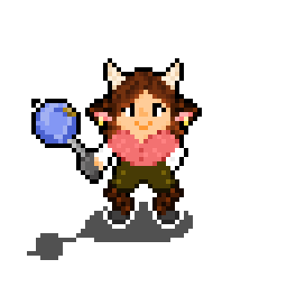

Oversee a newly formed colony of strangers in a world of untapped magic. Build homes, make friends, and explore the unknown.
[WASD]/[Arrows]=Pan | [B]=Build | [F]=Farm | [G]=Gather | [P]=Priorities | [M]=World Map | [C]=Craft | [R]=Research | [I]=Inventory | [V]=Rifts | [J]=Story | [H]=Warmth Overlay | [Y]=Defense Overlay | [U]=Room Quality Overlay | [K]=Aura Overlay | [Esc]=Settings | [Tab]=Toggle Chop/Mine | [Space]=Pause | [,/<]/[./>]=Speed | [+]/[-]/[Wheel]=Zoom | [/]=Reset Minimap | [Q]=Draft/Undraft | [E]=Select All | [N]=Next Idle | [[]/[]]=Cycle Colonist | [Click]=Select/Place | [Click+Drag]=Area select | [Middle-drag]=Pan | [Right-click]=Cancel/Mark for Destruction | [Esc]=Close/Cancel
Keys can be remapped in Settings → Controls / Keybindings.